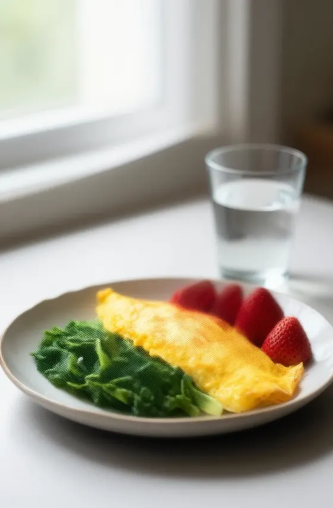

A cirurgia é o começo. O resultado se constrói no depois.
Acompanhamento nutricional no pré e no pós-bariátrico, com estratégia para evitar o reganho de peso. Presencial no Centro Clínico Alameda, em Campos dos Goytacazes, ou online de qualquer lugar do Brasil.
Em que momento você está?
Cada fase pede um cuidado diferente. O acompanhamento começa de onde você está.
Vou fazer a bariátrica
Um plano alimentar adequado antes do procedimento deixa o corpo pronto e facilita a adaptação no pós-operatório.
Já fiz a cirurgia
Recuperação saudável, sem deficiências nutricionais, e resultado que se mantém a longo prazo.
Estou recuperando peso
O reganho é comum, mas tem saída. Ajustes na alimentação e estratégia para retomar o controle, sem terrorismo alimentar.
Vou fazer a reparadora
Alimentação ajustada para cicatrizar melhor, reduzir inflamação e perder menos massa muscular.
O que o acompanhamento organiza
No pré e no pós, a gente olha junto o que precisa estar em ordem.
- Proteína na medidaPara manter massa magra e saciedade.
- HidrataçãoEstratégia de líquidos que funciona depois da cirurgia.
- Vitaminas e mineraisPrevenção de deficiências, com ajustes guiados pelos exames.
- Refeições que cabem na rotinaPlanejamento realista, sem cardápio impossível de seguir.
- Avaliação e ajuste do cardápioRevisado conforme a sua evolução, no seu ritmo.
- Estratégia contra o reganhoEquilíbrio, consciência e consistência para manter o resultado.
Quem é Lara Mendonça?
- Nutricionista (CRN-4 0000), pós-graduada em Cirurgia Bariátrica e Metabólica.
- Atende no Centro Clínico Alameda, em Campos dos Goytacazes/RJ, com avaliação detalhada e ajustes personalizados.
- Atendimento online tão completo quanto o presencial, para pacientes de todo o Brasil.
- Um acompanhamento que respeita o seu ritmo e as suas necessidades.
Direto do Instagram
Conteúdo sobre bariátrica, reganho e reparadora, toda semana em @laramendonca.nutri.
Onde você pode me encontrar?
Presencial no Centro Clínico Alameda, em Campos dos Goytacazes. Ou online, por vídeo, de onde você estiver.
Centro, Campos dos Goytacazes/RJ
Ainda com dúvida? Eu te explico
Antes da cirurgia. Um plano adequado no pré-operatório prepara o corpo e facilita a adaptação depois. Mas se você já operou, dá para começar agora.
Faz. O reganho de peso é comum depois da cirurgia, e com ajustes na alimentação e estratégia personalizada é possível retomar o controle.
Sim. O plano é tão personalizado quanto no consultório, e você recebe o mesmo suporte sem sair de casa.
Ajuda muito. A alimentação certa acelera a cicatrização, reduz o risco de inflamação e minimiza a perda muscular.
Se tiver exames recentes, leve. Os ajustes de vitaminas e minerais são guiados por eles.
Pelo WhatsApp (22) 0000-0000. É só dizer se prefere presencial, em Campos, ou online.
Siga firme na sua jornada
Agende sua consulta e faça esse processo com mais segurança.
